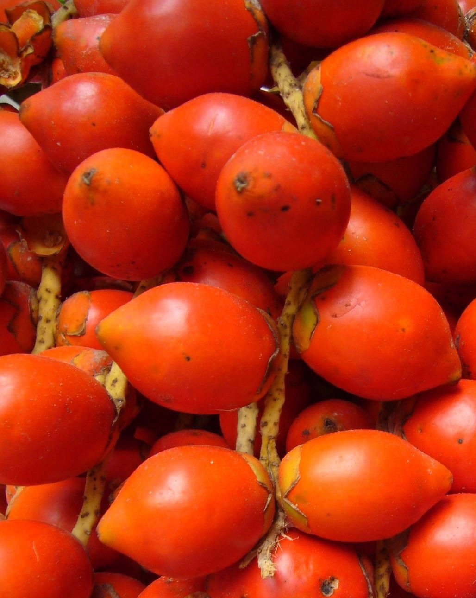

SUPERFOODS PERÚ
FRUTAS
ESTADOS UNIDOS,
HOLANDA Y
REINO UNIDO
FIGURARON, EN
ESE ORDEN, COMO
LOS PRINCIPALES CONSUMIDORES DE FRUTAS FRESCAS
PERUANAS,
CON COMPRAS
EQUIVALENTES
A 1546 MILLONES
DE DÓLARES.
LOS TRES PAÍSES
CONCENTRARON
EL 69,9% DEL TOTAL
EXPORTADO,
A TRAVÉS DE
LA COMPRA DE
UVAS, BANANAS,
MANGOS, PALTAS Y
MANDARINAS.
